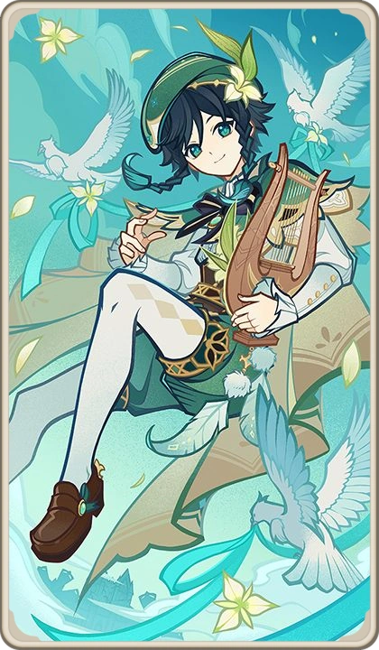

Venti began as a nameless wind spirit—one of countless elemental beings drifting through ancient Mondstadt.
He possessed no power, no title, and no identity. He was simply wind.
Old Mondstadt was ruled by Decarabian, the God of Storms.
He created a massive storm barrier, trapping his people inside to “protect” them.
But this protection became imprisonment. The people longed for freedom.
The wind spirit befriended a young bard who dreamed of seeing the world beyond the storm.
This bard represented freedom, hope, and human will.
Through him, the wind spirit understood what freedom truly meant.
The people of Mondstadt rose against Decarabian.
During the rebellion, the bard died.
This loss became the defining moment for the wind spirit.
After Decarabian’s fall, the wind spirit took the bard’s form.
He became Barbatos, the Anemo Archon.
But unlike other gods, he refused to rule directly.
Barbatos reshaped the land—cutting mountains and flattening terrain.
He created the open plains Mondstadt is known for today.
To protect Mondstadt without ruling it, Barbatos established the Four Winds.
Among them was Dvalin, the Stormdragon.
Dvalin was once Venti’s close companion.
Over time, corruption and abandonment twisted him into Stormterror.
This reflects the consequences of Venti’s absence.
Barbatos believes freedom is the highest ideal.
He refuses control, even if it leads to suffering.
To him, true freedom includes the right to make mistakes.
Unlike other Archons, Venti disappears for centuries.
He allows humans to govern themselves completely.
Venti loses his Gnosis to the Fatui Harbinger Signora.
He offers little resistance—suggesting he does not value divine authority.
Now living as Venti, he travels freely as a bard.
Behind his playful personality lies an ancient god who shaped freedom itself.
⭐ Rarity: 5★
🏹 Weapon: Bow
🍃 Element: Anemo
🧬 Constellation: Carmen Dei
🏷️ Real Name: Barbatos
🏛️ Category: Archon / God
🎭 Role: Crowd Control / Support
Venti excels at grouping enemies and enabling swirl reactions.
Skill: Launch enemies
Burst: Massive vortex